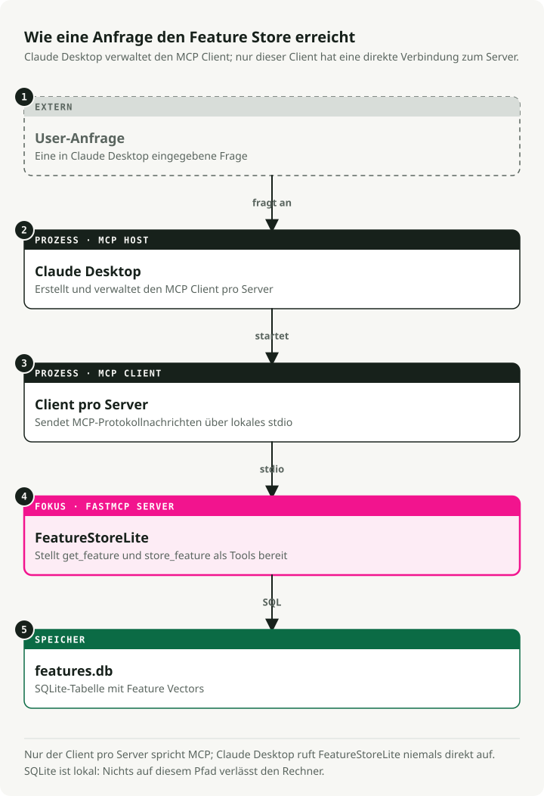
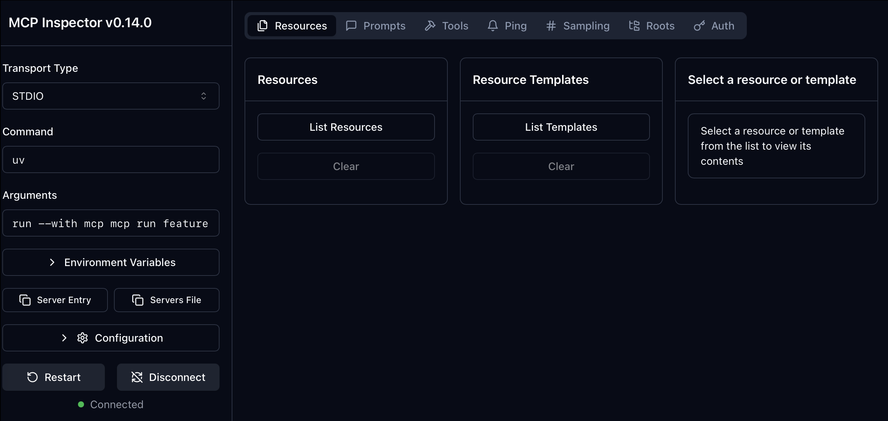
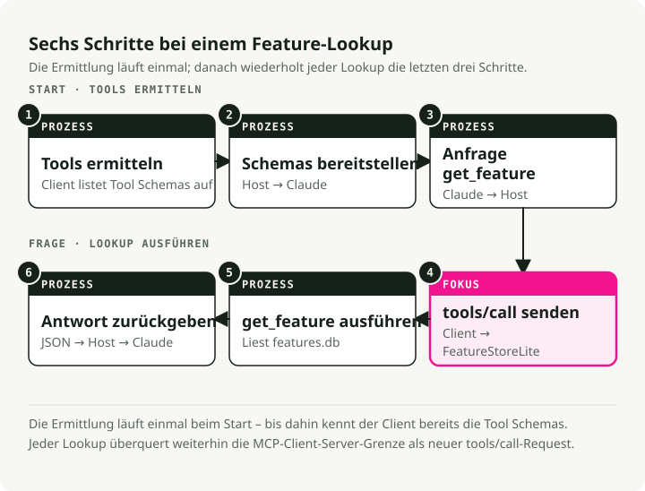

Automatische Übersetzung
Dieser Artikel wurde automatisch aus der englischen Originalversion übersetzt.
MCP-Server-Tutorial mit uv und FastMCP: Einen FeatureStoreLite-Server erstellen
In diesem MCP-Server-Tutorial bauen wir einen kleinen Feature-Store-Server mit FastMCP, führen ihn mit uv aus und binden ihn in Claude Desktop ein.
Was ist ein MCP-Server?
Das Model Context Protocol (MCP) ist ein offener Standard, um KI-Assistenten wie Claude mit externen Daten und Tools zu verbinden. Ein Protokoll, ein Satz Konventionen, statt für jedes Tool, das Sie bereitstellen möchten, eine neue Integration zu bauen.
In diesem Tutorial erstellen wir einen FeatureStoreLite-MCP-Server. Er sitzt zwischen einem LLM und einem Feature Store (einer Datenbank mit vorab berechneten ML-Features) und stellt Tools zum Abfragen und Schreiben von Feature-Vektoren bereit, die nach Benutzer, Produkt oder Dokument indiziert sind.
Warum das bauen?
Sie sind ML Engineer und debuggen eine Pipeline. Statt in SQL zu wechseln oder schnell ein Skript zu schreiben, um Feature-Werte zu prüfen, fragen Sie Claude direkt: „Was ist der Feature-Vektor für user_123?“ oder „Zeig mir die Metadaten für product_abc.“ Der MCP-Server macht genau das möglich.
Warum uv verwenden?
Wir verwenden uv, einen Python-Paketinstaller und Projektmanager, der deutlich schneller als pip ist und Abhängigkeitsauflösung sowie virtuelle Umgebungen in einem Tool vereint. Der zweite Grund: uv run --with mcp[cli] ... ermöglicht es uns, Abhängigkeiten später direkt inline in der Claude-Desktop-Konfiguration zu deklarieren, sodass kein separates venv synchron gehalten werden muss.
Architekturüberblick
Die vier Teile und wie sie zusammenspielen:

- Der Benutzer stellt eine Frage in natürlicher Sprache.
- Claude Desktop ist der MCP-Client. Es wählt basierend auf der Frage ein Tool aus und ruft es auf.
- Unser
FastMCP-Server stelltget_featureundstore_featureals MCP-Tools bereit. - SQLite ist der zugrunde liegende Speicher für die Feature-Vektoren.
2. Einrichtung und Installation
2.1. uv installieren
Falls Sie uv noch nicht installiert haben, holen Sie das jetzt nach. Der Rest des Tutorials setzt voraus, dass es in Ihrem PATH verfügbar ist.
# macOS/Linux
curl -LsSf https://astral.sh/uv/install.sh | sh
# Or via Homebrew
brew install uv
2.2. Das Projekt initialisieren
Erstellen Sie ein neues Verzeichnis und initialisieren Sie ein Python-Projekt. uv init erstellt dabei eine pyproject.toml für Sie.
# Create project directory
mkdir mcp-featurestore
cd mcp-featurestore
# Initialize Python project
uv init
# Add the MCP SDK with CLI tools
uv add "mcp[cli]"
3. Den Server erstellen
Zwei Dateien, nach Verantwortlichkeit getrennt:
database.pyverarbeitet SQLite-Operationen.featurestore_server.pydefiniert den MCP-Server.
3.1. Die Datenbankschicht (database.py)
Dieses Modul verwaltet die SQLite-Verbindung und einige Hilfsfunktionen. Wir initialisieren es mit zwei Beispielzeilen, damit der Server bei der ersten Abfrage etwas zurückgeben kann.
Erstellen Sie database.py:
# database.py
import json
import os
import sqlite3
def get_db_path() -> str:
"""Get the database path - always in the script's directory"""
script_dir = os.path.dirname(os.path.abspath(__file__))
return os.path.join(script_dir, "features.db")
def init_db() -> None:
"""Initialize the feature store database with table and sample data"""
conn = sqlite3.connect(get_db_path())
conn.execute("""
CREATE TABLE IF NOT EXISTS features (
key TEXT PRIMARY KEY,
vector TEXT NOT NULL,
metadata TEXT,
created_at TIMESTAMP DEFAULT CURRENT_TIMESTAMP
)
""")
# Sample data for experimentation
example_features = [
(
"user_123",
"[0.1, 0.2, -0.5, 0.8, 0.3, -0.1, 0.9, -0.4]",
json.dumps({"type": "user", "id": 123, "segment": "premium"}),
),
(
"product_abc",
"[0.7, -0.3, 0.4, 0.1, -0.8, 0.6, 0.2, -0.5]",
json.dumps({"type": "product", "id": "abc", "category": "electronics"}),
),
]
# Insert if not exists
for key, vector, metadata in example_features:
try:
conn.execute(
"INSERT INTO features (key, vector, metadata) VALUES (?, ?, ?)",
(key, vector, metadata),
)
except sqlite3.IntegrityError:
pass # Already exists
conn.commit()
conn.close()
def get_db_connection() -> sqlite3.Connection:
"""Get a database connection"""
return sqlite3.connect(get_db_path())
if __name__ == "__main__":
init_db()
print("✅ Database initialized successfully!")
Initialisieren Sie die Datenbank:
uv run python database.py
3.2. Der MCP-Server (featurestore_server.py)
FastMCP übernimmt den Großteil der Arbeit. Dekorieren Sie eine normale Python-Funktion, und sie wird als MCP-Tool oder -Ressource registriert. Der Docstring wird zur Beschreibung, die das LLM sieht. Schreiben Sie ihn also für ein LLM, nicht nur für Menschen.
Erstellen Sie featurestore_server.py:
# featurestore_server.py
import json
from mcp.server.fastmcp import FastMCP
from database import get_db_connection, init_db
# Initialize the MCP Server
mcp = FastMCP("FeatureStoreLite")
# Ensure DB is ready when server starts
init_db()
@mcp.resource("schema://main")
def get_schema() -> str:
"""
Resource: Provide the database schema.
Resources are passive data that LLMs can read like files.
"""
conn = get_db_connection()
try:
schema = conn.execute(
"SELECT sql FROM sqlite_master WHERE type='table'"
).fetchall()
return "\n".join(sql[0] for sql in schema if sql[0]) or "No tables found."
finally:
conn.close()
@mcp.tool()
def store_feature(key: str, vector: str, metadata: str | None = None) -> str:
"""
Tool: Store a feature vector.
Tools are executable functions that LLMs can call to perform actions.
"""
conn = get_db_connection()
try:
# Validate that vector is valid JSON
json.loads(vector)
conn.execute(
"INSERT OR REPLACE INTO features (key, vector, metadata) VALUES (?, ?, ?)",
(key, vector, metadata),
)
conn.commit()
return f"Successfully stored feature '{key}'"
except json.JSONDecodeError:
return "Error: Vector must be a valid JSON array string (e.g., '[0.1, 0.2]')"
except Exception as e:
return f"Error: {str(e)}"
finally:
conn.close()
@mcp.tool()
def get_feature(key: str) -> str:
"""
Tool: Retrieve a feature vector by key.
"""
conn = get_db_connection()
try:
row = conn.execute(
"SELECT vector, metadata FROM features WHERE key = ?", (key,)
).fetchone()
if row:
return json.dumps(
{
"key": key,
"vector": json.loads(row[0]),
"metadata": json.loads(row[1]) if row[1] else None,
},
indent=2,
)
return f"Feature '{key}' not found."
finally:
conn.close()
@mcp.tool()
def list_features() -> str:
"""
Tool: List all available feature keys.
"""
conn = get_db_connection()
try:
rows = conn.execute("SELECT key FROM features").fetchall()
return json.dumps([row[0] for row in rows])
finally:
conn.close()
if __name__ == "__main__":
mcp.run()
4. Testen mit MCP Inspector
Bevor Sie das in Claude einbinden, prüfen Sie den Server mit dem MCP Inspector. Das ist eine kleine Web-UI, mit der Sie Tools aufrufen und Ressourcen direkt lesen können.
uv run mcp dev featurestore_server.py
Der Befehl startet den Server und öffnet den Inspector in Ihrem Browser (normalerweise unter http://localhost:5173).

Rufen Sie get_feature mit key="user_123" auf. Wenn die JSON-Ausgabe der initialen Zeile zurückkommt, funktioniert der Server.
5. Verbindung zu Claude Desktop
Sobald der Inspector bestätigt, dass der Server funktioniert, registrieren Sie ihn in Claude Desktop.
5.1. Claude konfigurieren
Bearbeiten Sie Ihre Claude-Desktop-Konfigurationsdatei:
- macOS:
~/Library/Application Support/Claude/claude_desktop_config.json - Windows:
%APPDATA%/Claude/claude_desktop_config.json
Fügen Sie Ihren Server zum Objekt mcpServers hinzu:
{
"mcpServers": {
"featurestore": {
"command": "uv",
"args": [
"run",
"--with",
"mcp[cli]",
"mcp",
"run",
"/ABSOLUTE/PATH/TO/mcp-featurestore/featurestore_server.py"
]
}
}
}
Wichtig: Der Pfad zu
featurestore_server.pymuss absolut sein. Ein relativer Pfad schlägt still fehl, weil Claude Desktop aus einem anderen Arbeitsverzeichnis läuft.
5.2. So funktioniert die Interaktion
Folgendes läuft Ende-zu-Ende ab, wenn Claude einen Feature-Lookup benötigt:

- Claude sieht die verfügbaren Tools (
get_feature,list_featuresusw.). - Es entscheidet, dass die Frage Daten aus dem Feature Store benötigt.
- Es erstellt einen Tool-Aufruf und sendet ihn an Ihren Server.
- Der Server führt die Python-Funktion aus und gibt das Ergebnis zurück.
- Claude verwendet dieses Ergebnis, um die endgültige Antwort zu formulieren.
5.3. Beispielabfragen
Starten Sie Claude Desktop neu und probieren Sie einige Prompts aus:
-
"List all available features."

-
"Get the feature vector for user_123."

-
"Store a new feature for 'new_item' with vector [0.5, 0.5] and metadata {'type': 'test'}."
6. Fehlerbehebung
Einige Fehlermodi, die Sie kennen sollten:
-
"Server connection failed":
- Prüfen Sie die Logs unter
~/Library/Logs/Claude/mcp.logauf macOS. - Stellen Sie sicher, dass die Konfiguration einen absoluten und keinen relativen Pfad verwendet.
- Stellen Sie sicher, dass
uvimPATHvon Claude Desktop liegt. Falls nicht, verweisen Sie auf den vollständigen Binärpfad (which uvzeigt Ihnen, wo er liegt).
- Prüfen Sie die Logs unter
-
"Tool execution error":
- Reproduzieren Sie den Fehler im Inspector mit
uv run mcp dev featurestore_server.py. Der Inspector zeigt den Rohfehler an, den Claude Desktop normalerweise verschluckt. - Prüfen Sie, ob
features.dbnebendatabase.pyerstellt wird. Wenn sich Ihr Arbeitsverzeichnis verschiebt, rettet Sie der skriptrelative Pfad inget_db_path().
- Reproduzieren Sie den Fehler im Inspector mit
7. Fazit
Das ist die ganze Sache: ein FastMCP-Server, ein SQLite-Backing-Store und eine Claude-Desktop-Konfiguration, die auf einen uv run-Befehl zeigt. Dieselbe Struktur funktioniert für alles, was Sie in eine Python-Funktion kapseln können. Ersetzen Sie die SQLite-Aufrufe durch einen echten Feature Store, eine interne API oder eine Model Registry, und der Server bleibt klein.